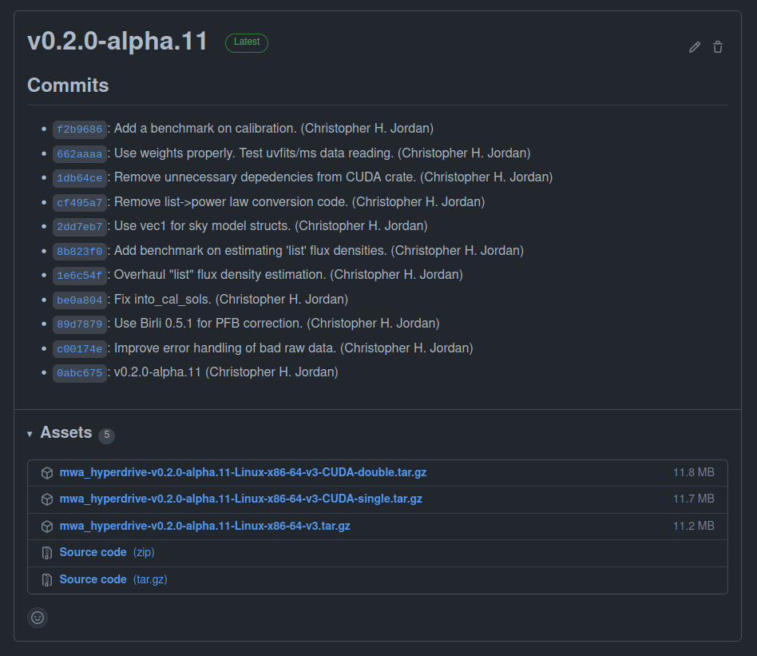
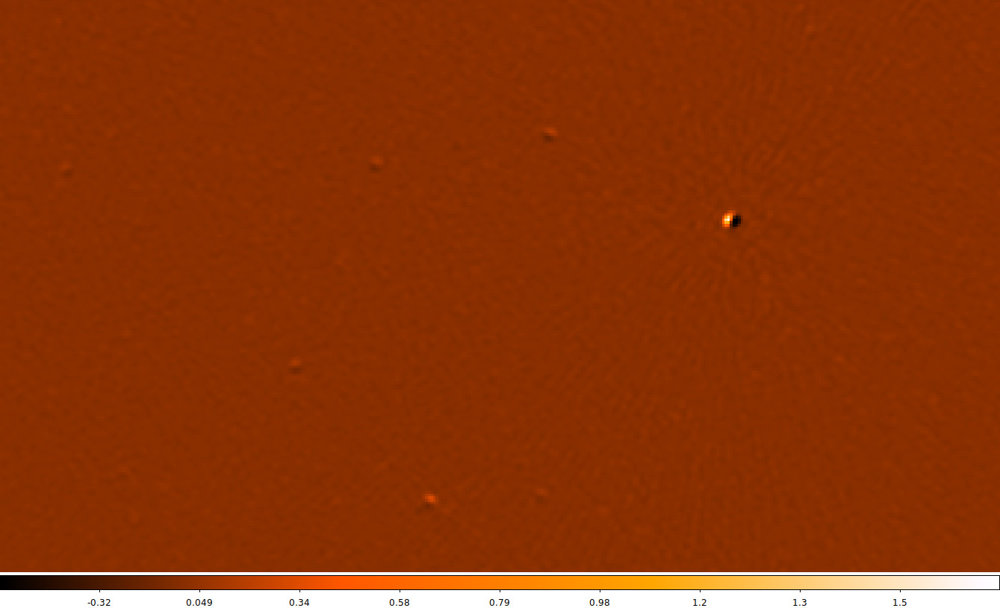
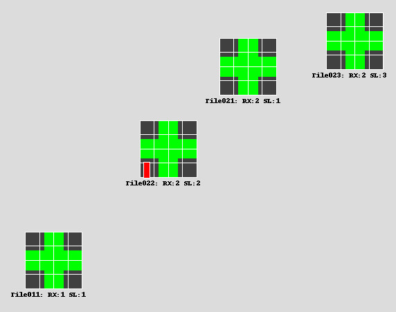

Introduction

mwa_hyperdrive (simply referred to as hyperdrive) is calibration software
for the Murchison Widefield Array radio telescope. The documentation contained
in this book aims to help understand how to use it and how it works.
Some of the more useful parts of this documentation might be:
-
a user guide; e.g.
-
definitions and concepts; e.g.
Installation
The easiest way to get access to hyperdrive is to download a pre-compiled
binary from GitHub. Instructions are on the next page.
However, you may need to compile hyperdrive from source. If so, see the
instructions here (note that the code will likely run faster
if you compile it from source).
Finally, regardless of how you get the hyperdrive binary, follow the post
installation instructions.
Installing hyperdrive from pre-compiled binaries
Visit the GitHub releases page. You should see releases like the following:

- Under "Assets", download one of the
tar.gzfiles starting withmwa_hyperdrive; - Untar it (e.g.
tar -xvf mwa_hyperdrive*.tar.gz); and - Run the binary (
./hyperdrive).
If you intend on running hyperdrive on a desktop GPU, then you probably want
the "CUDA-single" release. You can still use the double-precision version on a
desktop GPU, but it will be much slower than single-precision. Instructions to
install CUDA are on the next page.
The pre-compiled binaries are made by GitHub actions using:
```shell
cargo build --release --locked --no-default-features --features=hdf5-static,erfa-static,cfitsio-static
```
This means they cannot plot calibration solutions.
"CUDA-double" binaries have the `cuda` feature and "CUDA-single" binaries have
the `cuda-single` feature. CUDA cannot legally be statically linked so a local
installation of CUDA is required.
Installing hyperdrive from source code
Dependencies
hyperdrive depends on these C libraries:
- Ubuntu: `libcfitsio-dev`
- Arch: `cfitsio`
- Library and include dirs can be specified manually with `CFITSIO_LIB` and
`CFITSIO_INC`
- If not specified, `pkg-config` is used to find the library.
- Can compile statically; use the `cfitsio-static` or `all-static` features.
- Requires a C compiler and `autoconf`.
- Ubuntu: `liberfa-dev`
- Arch: AUR package `erfa`
- The library dir can be specified manually with `ERFA_LIB`
- If not specified, `pkg-config` is used to find the library.
- Can compile statically; use the `erfa-static` or `all-static` features.
- Requires a C compiler and `autoconf`.
- Ubuntu: `libhdf5-dev`
- Arch: `hdf5`
- The library dir can be specified manually with `HDF5_DIR`
- If not specified, `pkg-config` is used to find the library.
- Can compile statically; use the `hdf5-static` or `all-static` features.
- Requires `CMake` version 3.10 or higher.
Optional dependencies
- Only needed if the `plotting` feature is enabled (which it is by default)
- Arch: `pkg-config` `make` `cmake` `freetype2`
- Ubuntu: `libfreetype-dev` `libexpat1-dev`
- Only needed if either the `cuda` or `cuda-single` feature is enabled
- Arch: `cuda`
- The library dir can be specified manually with `CUDA_LIB`
- If not specified, `/usr/local/cuda` and `/opt/cuda` are searched.
- Can link statically; use the `cuda-static` or `all-static` features.
Installing Rust
```shell
curl --proto '=https' --tlsv1.2 -sSf https://sh.rustup.rs | sh
```
hyperdrive is written in Rust, so a Rust
environment is required. The Rust
book has excellent
information to do this. Similar, perhaps more direct information is
here.
Do not use apt to install Rust components.
Cloning the hyperdrive repo
git clone https://github.com/MWATelescope/mwa_hyperdrive
Don't forget to cd into the repo:
cd mwa_hyperdrive
Compiling hyperdrive
cargo install --path . --locked
This will install hyperdrive to ~/.cargo/bin/hyperdrive. This binary can be
moved anywhere and it will still work. The installation destination can be
changed by setting CARGO_HOME.
Do you have a CUDA-capable NVIDIA GPU? Ensure you have installed
[CUDA](https://developer.nvidia.com/cuda-zone) (instructions are above), find
your CUDA device's compute capability
[here](https://developer.nvidia.com/cuda-gpus) (e.g. Geforce RTX 2070 is 7.5),
and set a variable with this information (note the lack of a period in the
number):
```shell
export HYPERDRIVE_CUDA_COMPUTE=75
```
Now you can compile `hyperdrive` with CUDA enabled (single-precision floats):
```shell
cargo install --path . --locked --features=cuda-single
```
If you're using "datacentre" products (e.g. a V100 available on the
Pawsey-hosted supercomputer "garrawarla"), you probably want double-precision
floats:
```shell
cargo install --path . --locked --features=cuda
```
You can still compile with double-precision on a desktop GPU, but it will be
much slower than single-precision.
The aforementioned C libraries can each be compiled by `cargo`. `all-static`
will statically-link all dependencies (including CUDA, if CUDA is enabled) such
that **you need not have these libraries available to use `hyperdrive`**.
Individual dependencies can be statically compiled and linked, e.g.
`cfitsio-static`. See the dependencies list above for more information.
`cargo` features can be chained in a comma-separated list:
```shell
cargo install --path . --locked --features=cuda,all-static
```
If you're having problems compiling, it's possible you have an older Rust
toolchain installed. Try updating it:
```shell
rustup update
```
If that doesn't help, try cleaning the local build directories:
```shell
cargo clean
```
and try compiling again. If you're still having problems, raise a [GitHub
issue](https://github.com/MWATelescope/mwa_hyperdrive/issues) describing your
system and what you've tried.
Post installation instructions
Many `hyperdrive` functions require the beam code to function. The MWA FEE beam
HDF5 file can be obtained with:
```shell
wget http://ws.mwatelescope.org/static/mwa_full_embedded_element_pattern.h5
```
Move the `h5` file anywhere you like, and put the file path in the
`MWA_BEAM_FILE` environment variable:
```shell
export MWA_BEAM_FILE=/path/to/mwa_full_embedded_element_pattern.h5
```
See the README for [`hyperbeam`](https://github.com/MWATelescope/mwa_hyperbeam)
for more info.
Introduction
hyperdrive aims to make users' lives as easy as possible. Commands should
always have good quality help text, errors and output messages. However, users
may have questions that the hyperdrive binary itself cannot answer; that's
where this documentation comes in.
If ever you find hyperdrive's help text lacking or this documentation doesn't
answer your question, feel free to file an
issue (or even better,
file a PR!).
Getting started
Do you want to do some calibration, but don't know how to start? Can't remember what that command-line argument is called? If ever you're in doubt, consult the help text:
# Top-level help
hyperdrive --help
# di-calibrate help
hyperdrive di-calibrate --help
di-calibrate is one of many subcommands. Subcommands are accessed by typing
them after hyperdrive. Each subcommand accepts --help (as well as -h).
Detailed usage information on each subcommand can be seen in the table of
contents of this book. More information on subcommands as a concept is below.
`hyperdrive` itself is split into many subcommands. These are simple to list:
```shell
hyperdrive -h
# OR
hyperdrive --help
```
Output (edited for brevity):
```plaintext
SUBCOMMANDS:
di-calibrate
vis-simulate
solutions-convert
solutions-plot
srclist-by-beam
```
The help text for these is accessible in a similar way:
```shell
hyperdrive solutions-plot -h
# OR
hyperdrive solutions-plot --help
```
```plaintext
hyperdrive-solutions-plot 0.2.0-alpha.11
Plot calibration solutions. Only available if compiled with the "plotting" feature.
USAGE:
hyperdrive solutions-plot [OPTIONS] [SOLUTIONS_FILES]...
ARGS:
<SOLUTIONS_FILES>...
OPTIONS:
-r, --ref-tile <REF_TILE> The reference tile to use. If this isn't specified, the best one from the end is used
-n, --no-ref-tile Don't use a reference tile. Using this will ignore any input for `ref_tile`
--ignore-cross-pols Don't plot XY and YX polarisations
--min-amp <MIN_AMP> The minimum y-range value on the amplitude gain plots
--max-amp <MAX_AMP> The maximum y-range value on the amplitude gain plots
-m, --metafits <METAFITS> The metafits file associated with the solutions. This provides additional information on the plots, like the tile names
-v, --verbosity The verbosity of the program. Increase by specifying multiple times (e.g. -vv). The default is to print only high-level information
-h, --help Print help information
-V, --version Print version information
```
It's possible to save keystrokes when subcommands aren't ambiguous, e.g. use
`solutions-p` as an alias for `solutions-plot`:
```shell
hyperdrive solutions-p
<help text for "solutions-plot">
```
This works because there is no other subcommand that `solutions-p` could refer
to. On the other hand, `solutions` won't be accepted because both
`solutions-plot` and `solutions-convert` exist.
`di-c` works for `di-calibrate`. Unfortunately this is not perfect; the `-` is
required even though `di` should be enough.
DI calibration
Direction-Independent (DI) calibration "corrects" raw telescope data.
hyperdrive achieves this with "sky model calibration". This can work very
well, but relies on two key assumptions:
- The sky model is an accurate reflection of the input data; and
- The input data are not too contaminated (e.g. by radio-frequency interference).
A high-level overview of the steps in di-calibrate are below. Solid lines
indicate actions that always happen, dashed lines are optional:
%%{init: {'theme':'dark', 'themeVariables': {'fontsize': 20}}}%%
flowchart TD
InputData[fa:fa-file Input data files]-->Args
SkyModel[fa:fa-file Sky-model source-list file]-->Args
Settings[fa:fa-cog Other settings]-.->Args
Args[fa:fa-cog User arguments]-->Valid{fa:fa-code Valid?}
Valid --> cal
subgraph cal[For all timeblocks]
Read[fa:fa-code Read a timestep\nof input data]
Model["fa:fa-code Generate model vis\n (CPU or GPU)"]
Model-.->WriteModelVis[fa:fa-save Write model visibilities]
LSQ[fa:fa-code Calibrate via least squares]
Read-->LSQ
Model-->LSQ
LSQ-->|Iterate|LSQ
LSQ-->Sols[fa:fa-wrench Accumulate\ncalibration solutions]
end
cal-->WriteSols[fa:fa-save Write calibration solutions]
DI calibration tutorial
Here, a series of steps are laid out to demonstrate how raw MWA data is
calibrated with hyperdrive. We also plot calibration solutions and image
calibrated data with wsclean.
Install hyperdrive if you haven't already.
Feel free to try your own data, but test data is available in the `hyperdrive`
repo; download it with this command:
```shell
git clone https://github.com/MWATelescope/mwa_hyperdrive --depth 1
cd mwa_hyperdrive
```
The files are `test_files/1090008640/1090008640_20140721201027_gpubox01_00.fits`
and `test_files/1090008640/1090008640.metafits`. This is tiny part of the [real
1090008640
observation](http://ws.mwatelescope.org/observation/obs/?obs_id=1090008640) used
in `hyperdrive` tests.
It's very important to use a sky model that corresponds to the data you're
using. For EoR fields, [srclists](https://github.com/JLBLine/srclists) contains
many suitable source lists.
Here, a source list is already provided for testing:
`test_files/1090008640/srclist_pumav3_EoR0aegean_EoR1pietro+ForA_1090008640_100.yaml`.
We're going to run the `di-calibrate` subcommand of `hyperdrive`. If you look at
the help (with `hyperdrive di-calibrate --help`), you should see the `--data`
(`-d` for short) and `--source-list` (`-s` for short) flags under an `INPUT
FILES` header. These are the only two things needed to do calibration:
```shell
hyperdrive di-calibrate -d test_files/1090008640/1090008640_20140721201027_gpubox01_00.fits test_files/1090008640/1090008640.metafits -s test_files/1090008640/srclist_pumav3_EoR0aegean_EoR1pietro+ForA_1090008640_100.yaml
```
The above command can be more neatly expressed as:
```shell
hyperdrive di-calibrate \
-d test_files/1090008640/1090008640_20140721201027_gpubox01_00.fits \
test_files/1090008640/1090008640.metafits \
-s test_files/1090008640/srclist_pumav3_EoR0aegean_EoR1pietro+ForA_1090008640_100.yaml
```
This isn't specific to `hyperdrive`; this is just telling your shell to use
multiple lines separated by `\`.
The command we ran in step 3 should give us information on the input data, the
sky model, any output files, as well as things relating to calibration. One line reports:
```plaintext
Reading input data and sky modelling
```
This indicates that `hyperdrive` is reading the data from disk and generating
model visibilities. This is usually the slowest part of the whole process, so
depending on your inputs, this could take some time. You should also see some
progress bars related to these two tasks.
Once the progress bars are finished, calibration can begin. You should see many lines like:
```plaintext
Chanblock 11: converged (50): 1e-4 > 9.57140e-7 > 1e-8
```
This indicates three things:
- Chanblock 11 converged;
- 50 iterations were performed; and
- The final error was 9.57140e-7, which is between 1e-4 and 1e-8.
A ["chanblock"](../../defs/blocks.md) is a frequency unit of calibration;
it may correspond to one or many channels of the input data.
Calibration is done iteratively; it iterates until the "stop threshold" is
reached, or up to a set number of times. The "stop" and "minimum" thresholds
are used during convergence. If the stop threshold is reached before the maximum
number of iterations, we say that the chanblock has converged well enough that
we can stop iterating. However, if we reach the maximum number of iterations,
one of two things happens:
- The chanblock convergence has not reached the stop threshold but exceed the
minimum threshold.
- In this case, we say the chanblock converged and note that it didn't reach
the stop threshold.
- The chanblock convergence has not reached either the stop or minimum (1e-4
by default) thresholds.
- In this case, we say the chanblock did not converge ("failed").
All of these calibration parameters (maximum iterations, stop threshold,
minimum threshold) are allowed to be adjusted.
Don't assume that things will always work! A good indicator of how calibration
went is given toward the end of the output of `di-calibrate`:
```plaintext
All timesteps: 27/27 (100%) chanblocks converged
```
In this case, all chanblocks converged, giving us confidence that things went
OK. But there are other things we can do to inspect calibration quality; good
examples are plotting the solutions, and imaging the calibrated data.
First, we need to know where the solutions were written; this is also reported
toward the end of the output of `di-calibrate`:
```plaintext
INFO Calibration solutions written to hyperdrive_solutions.fits
```
So the solutions are at `hyperdrive_solutions.fits`. We can make plots with `solutions-plot`; i.e.
```shell
hyperdrive solutions-plot hyperdrive_solutions.fits
```
The command should give output like this:
```plaintext
INFO Wrote ["hyperdrive_solutions_amps.png", "hyperdrive_solutions_phases.png"]
```
These plots should look something like this:


Each box corresponds to an MWA tile and each tile has dots plotted for each
channel we calibrated. The dots are really hard to see because there are only 27
channels with solutions. However, if we look _very_ closely, we can see that,
generally, the dot values don't change much with frequency (particularly for the
amps), or the dot values change steadily with frequency (particularly for the
phases). This also hints that the calibration solutions are good.
The solutions plots for the full 1090008640 observation look like this:


Things are much easier to see when there are more dots! As before, changes
with frequency are small or smooth.
More information on the calibration solutions file formats can be seen
[here](../../defs/cal_sols.md).
We have calibration solutions, but not calibrated data. We need to "apply" the
solutions to data to calibrate them:
```shell
hyperdrive solutions-apply \
-d test_files/1090008640/1090008640_20140721201027_gpubox01_00.fits \
test_files/1090008640/1090008640.metafits \
-s hyperdrive_solutions.fits \
-o hyp_cal.ms
```
This will write calibrated visibilities to `hyp_cal.ms`. Now we can image the
measurement set with [`wsclean`](https://gitlab.com/aroffringa/wsclean):
```shell
wsclean -size 4096 4096 -scale 40asec -niter 1000 -auto-threshold 3 hyp_cal.ms
```
This writes an image file to `wsclean-image.fits`. You can use many FITS file
viewers to inspect the image, but here's what it looks like with
[DS9](https://sites.google.com/cfa.harvard.edu/saoimageds9):

Sources are visible! Generally the image quality is OK, but not great. This is
because there was very little input data.
When using the [full 1090008640
observation](http://ws.mwatelescope.org/observation/obs/?obs_id=1090008640),
this is what the same image looks like (note that unlike the above image, "sqrt"
scaling is used):

Many more sources are visible, and the noise is much lower. Depending on your
science case, these visibilities might be "science ready".
Simple usage of DI calibrate
DI calibration is done with the `di-calibrate` subcommand, i.e.
```shell
hyperdrive di-calibrate
```
At the very least, this requires:
- Input data (with the flag `-d`)
- [Supported formats](../../defs/vis_formats_read.md)
- A sky model (with the flag `-s`)
- [Supported formats](../../defs/source_lists.md)
- PUMA sky models suitable for EoR calibration (and perhaps other parts of the
sky) can be obtained [here](https://github.com/JLBLine/srclists) (at the time of writing [srclist_pumav3_EoR0aegean_fixedEoR1pietro+ForA_phase1+2.txt](https://github.com/JLBLine/srclists/blob/master/srclist_pumav3_EoR0aegean_fixedEoR1pietro%2BForA_phase1%2B2.txt) is preferred)
Examples
A [metafits](../../defs/mwa/metafits.md) file is always required when reading
raw MWA data. [`mwaf`](../../defs/mwa/mwaf.md) files are optional.
For "legacy" MWA data:
```shell
hyperdrive di-calibrate -d *gpubox*.fits *.metafits *.mwaf -s a_good_sky_model.yaml
```
or for MWAX:
```shell
hyperdrive di-calibrate -d *ch???*.fits *.metafits *.mwaf -s a_good_sky_model.yaml
```
Note that a metafits may not be required, but is generally a good idea.
```shell
hyperdrive di-calibrate -d *.ms *.metafits -s a_good_sky_model.yaml
```
Note that a metafits may not be required, but is generally a good idea.
```shell
hyperdrive di-calibrate -d *.uvfits *.metafits -s a_good_sky_model.yaml
```
Writing out calibrated data
di-calibrate does not write out calibrated data (visibilities); see
solutions-apply. You will need calibration
solutions, so refer to the previous pages on DI calibration to get those.
Calibrated visibilities are written out in one of the [supported
formats](../../defs/vis_formats_write.md) and can be
[averaged](../../defs/vis_formats_write.md#visibility-averaging).
Varying solutions over time
See [this page](../../../defs/blocks.md) for information on timeblocks.
By default, di-calibrate uses only one "timeblock", i.e. all data timesteps
are averaged together during calibration. This provides good signal-to-noise,
but it is possible that calibration is improved by taking time variations into
account. This is done with --timesteps-per-timeblock (-t for short).
If --timesteps-per-timeblock is given a value of 4, then every 4 timesteps are
calibrated together and written out as a timeblock. Values with time units (e.g.
8s) are also accepted; in this case, every 8 seconds worth of data are
averaged during calibration and written out as a timeblock.
Depending on the number of timesteps in the data, using -t could result in
many timeblocks written to the calibration solutions. Each solution timeblock
is plotted when these solutions are given to solutions-plot. For each timestep
in question, the best solution timeblock is used when running solutions-apply.
Implementation
When multiple timeblocks are to be made, hyperdrive will do a pass of
calibration using all timesteps to provide each timeblock's calibration with a
good "initial guess" of what their solutions should be.
Usage on garrawarla
garrawarla
is a supercomputer dedicated to MWA activities hosted by the Pawsey
Supercomputing Centre. It uses
Slurm for its job scheduling.
Getting access
hyperdrive has been installed on garrawarla, but not by Pawsey. For this
reason, an extra command is needed to get access to it:
module use /pawsey/mwa/software/python3/modulefiles
You should then be able to see multiple versions of hyperdrive to use:
module avail hyperdrive
---------------- /pawsey/mwa/software/python3/modulefiles ----------------
hyperdrive/chj (L) hyperdrive/v0.2.0-alpha10
hyperdrive/v0.2.0-alpha11 (D)
Where:
D: Default Module
L: Module is loaded
To use the default version, just run:
module load hyperdrive
To use a specific version, provide it to the load command, e.g.:
module load hyperdrive/v0.2.0-alpha11
Running interactively
Testing your command interactively before using Slurm scripts could save you
some time.
- Use
sallocto request a node:
salloc --partition gpuq --time 1:00:00 --nodes 1 --gres=gpu:1 --cpus-per-task 40
- Get access to
hyperdrive, e.g.:
module use /pawsey/mwa/software/python3/modulefiles
module load hyperdrive/v0.2.0-alpha11
- Run your command (see examples of usage in the previous sections of this book).
Note the --cpus-per-task given to salloc; using more CPUs will make some
aspects of di-calibrate run faster. It's probably not a good idea to use less
than 10, and the maximum is 40.
It is possible to run hyperdrive without a GPU, but generating model
visibilities will be much slower.
Example Slurm script
#!/bin/bash -l
#SBATCH --job-name=hyp-$1
#SBATCH --output=hyperdrive.out
#SBATCH --nodes=1
#SBATCH --ntasks-per-node=40
#SBATCH --time=01:00:00
#SBATCH --clusters=garrawarla
#SBATCH --partition=gpuq
#SBATCH --account=mwaeor
#SBATCH --export=NONE
#SBATCH --gres=gpu:1,tmp:50g
module use /pawsey/mwa/software/python3/modulefiles
module load hyperdrive
set -eux
command -v hyperdrive
cd /astro/mwaeor/MWA/data/1090008640
# Get calibration solutions. Use the top 1000 sources.
hyperdrive di-calibrate \
-s /pawsey/mwa/software/python3/srclists/master/srclist_pumav3_EoR0aegean_fixedEoR1pietro+ForA_phase1+2.txt \
-n 1000
-d *gpubox*.fits *.metafits *.mwaf \
-o hyp_sols.fits
# Apply the solutions and write out a measurement set.
# Write it to /nvmetmp as that's much faster than /astro.
hyperdrive solutions-apply \
-d *gpubox*.fits *.metafits *.mwaf \
-s hyp_sols.fits \
-o /nvmetmp/hyp_calibrated.ms \
--time-average 8s \
--freq-average 80kHz
# Move the measurement set to /astro.
mv /nvmetmp/hyp_calibrated.ms .
This example script reserves 50 GB of space for node local storage (/nvmetmp).
If your output visibilities are bigger than this, then the write will fail; you
should adjust the #SBATCH --gres=tmp:50g line to account for this, e.g.
#SBATCH --gres=tmp:200g.
Solutions apply
solutions-apply takes calibration solutions and applies them to input
visibilities before writing out visibilities. All input formats are supported,
however hyperdrive-style calibration solutions are preferred because they are
unambiguous when applying multiple timeblocks.
apply-solutions can be used instead of solutions-apply.
A high-level overview of the steps in solutions-apply are below. Solid lines
indicate actions that always happen, dashed lines are optional:
%%{init: {'theme':'dark', 'themeVariables': {'fontsize': 20}}}%%
flowchart TD
InputData[fa:fa-file Input data files]-->Args
CalSols[fa:fa-wrench Calibration\nsolutions]-->Args
Settings[fa:fa-cog Other settings]-.->Args
Args[fa:fa-cog User arguments]-->Valid{fa:fa-code Valid?}
Valid --> apply
subgraph apply[For all timesteps]
Read[fa:fa-code Read a timestep\nof input data]
Read-->Apply["fa:fa-code Apply calibration\nsolutions to timeblock"]
Apply-->Write[fa:fa-save Write timeblock\nvisibilities]
end
Simple usage of solutions apply
Use the `solutions-apply` subcommand, i.e.
```shell
hyperdrive solutions-apply
```
At the very least, this requires:
- Input data (with the flag `-d`)
- [Supported formats](../../defs/vis_formats_read.md)
- Calibration solutions (with the flag `-s`)
- [Supported formats](../../defs/cal_sols.md)
Examples
```shell
hyperdrive solutions-apply -d *gpubox*.fits *.metafits *.mwaf -s hyp_sols.fits -o hyp_cal.ms
```
```shell
hyperdrive solutions-apply -d *.ms -s hyp_sols.fits -o hyp_cal.ms
```
```shell
hyperdrive solutions-apply -d *.uvfits -s hyp_sols.fits -o hyp_cal.ms
```
Generally the syntax is the same as di-calibrate.
Simulate visibilities
vis-simulate effectively turns a sky-model source list into visibilities.
```shell
hyperdrive vis-simulate \
-s srclist.yaml \
-m *.metafits
```
Considerations
Disabling beam attenuation
--no-beam
Dead dipoles
By default, dead dipoles in the
metafits are used. These will affect the generated
visibilities. You can disable them with --unity-dipole-gains.
Vetoing
Source-list vetoing can do unexpected things. You can effectively disable it by
supplying --veto-threshold 0, although the veto routine will still:
- Remove sources below the horizon; and
- Sort the remaining sources by brightness based off of the centre frequencies MWA coarse channels.
Subtract visibilities
vis-subtract can subtract the sky-model visibilities from calibrated data
visibilities and write them out. This can be useful to see how well the sky
model agrees with the input data, although direction-dependent effects (e.g. the
ionosphere) may be present and produce "holes" in the visibilities, e.g.:

A high-level overview of the steps in vis-subtract are below. Solid lines
indicate actions that always happen, dashed lines are optional:
%%{init: {'theme':'dark', 'themeVariables': {'fontsize': 20}}}%%
flowchart TD
InputData[fa:fa-file Calibrated input data]-->Args
CalSols[fa:fa-file Sky-model source-list file]-->Args
Settings[fa:fa-cog Other settings]-.->Args
Args[fa:fa-cog User arguments]-->Valid{fa:fa-code Valid?}
Valid --> subtract
subgraph subtract[For all timesteps]
Read[fa:fa-code Read a timestep\nof input data]
Read-->Apply["fa:fa-code Generate model vis\nand subtract it from input data"]
Apply-->Write[fa:fa-save Write timeblock\nvisibilities]
end
Instrumental polarisations
In hyperdrive (and mwalib and
hyperbeam), the X
polarisation refers to the East-West dipoles and the Y refers to North-South.
Note that this contrasts with the IAU definition of X and Y, which is opposite
to this. However, this is consistent within the MWA.
MWA visibilities are ordered XX, XY, YX, YY (using the above definitions of X and Y).
Stokes polarisations
In hyperdrive:
- \( \text{XX} = \text{I} + \text{Q} \)
- \( \text{XY} = \text{U} + i\text{V} \)
- \( \text{YX} = \text{U} - i\text{V} \)
- \( \text{YY} = \text{I} - \text{Q} \)
where \( \text{I} \), \( \text{Q} \), \( \text{U} \), \( \text{V} \) are Stokes polarisations and \( i \) is the imaginary unit.
Supported visibility formats for reading
Raw "legacy" MWA data comes in "gpubox" files. "MWAX" data comes in a similar
format, and `*ch???*.fits` is a useful glob to identify them. Raw data can be
accessed from the [ASVO](https://asvo.mwatelescope.org/).
Here are examples of using each of these MWA formats with `di-calibrate`:
```shell
hyperdrive di-calibrate -d *gpubox*.fits *.metafits *.mwaf -s a_good_sky_model.yaml
hyperdrive di-calibrate -d *ch???*.fits *.metafits *.mwaf -s a_good_sky_model.yaml
```
Note that all visibility formats should probably be accompanied by a metafits
file. See [this page](mwa/metafits.md) for more info.
`mwaf` files indicate what visibilities should be flagged. See [this
page](mwa/mwaf.md) for more info.
```shell
hyperdrive di-calibrate -d *.ms *.metafits -s a_good_sky_model.yaml
```
Measurement sets are typically made with
[`Birli`](https://github.com/MWATelescope/Birli) or
[`cotter`](https://github.com/MWATelescope/cotter)
([`Birli`](https://github.com/MWATelescope/Birli) preferred). Note that a
metafits is desirable but usually not required. At the time of writing,
MWA-formatted measurement sets do not contain dead dipole information, and so
calibration may not be as accurate as it could be.
```shell
hyperdrive di-calibrate -d *.uvfits *.metafits -s a_good_sky_model.yaml
```
When reading uvfits, a metafits is not required *only* if the user has supplied
the MWA dipole delays. At the time of writing, MWA-formatted uvfits files do not
contain dipole delays or dead dipole information, and so avoiding a metafits
file when calibrating may mean it is not as accurate as it could be.
A copy of the uvfits standard is
[here](https://library.nrao.edu/public/memos/aips/memos/AIPSM_117.pdf).
Supported visibility formats for writing
The following examples illustrate how to produce each of the supported
visibility file formats with solutions-apply, but other aspects of
hyperdrive are also able to produce these file formats, and all aspects are
able to perform averaging and write to multiple outputs.
```shell
hyperdrive solutions-apply \
-d *gpubox*.fits *.metafits \
-s hyp_sols.fits \
-o hyp_cal.ms
```
```shell
hyperdrive solutions-apply \
-d *gpubox*.fits *.metafits \
-s hyp_sols.fits \
-o hyp_cal.uvfits
```
A copy of the uvfits standard is
[here](https://library.nrao.edu/public/memos/aips/memos/AIPSM_117.pdf).
When writing out visibilities, they can be averaged in time and frequency. Units
can be given to these; e.g. using seconds and kiloHertz:
```shell
hyperdrive solutions-apply \
-d *gpubox*.fits *.metafits *.mwaf \
-s hyp_sols.fits \
-o hyp_cal.ms \
--time-average 8s \
--freq-average 80kHz
```
Units are not required; in this case, these factors multiply the observation's
time and freq. resolutions:
```shell
hyperdrive solutions-apply \
-d *gpubox*.fits *.metafits *.mwaf \
-s hyp_sols.fits \
-o hyp_cal.ms \
--time-average 4 \
--freq-average 2
```
If the same observation is used in both examples, with a time resolution of 2s
and a freq. resolution of 40kHz, then both commands will yield the same result.
See [this page](blocks.md) for information on how visibilities are averaged in
time and frequency.
All aspects of `hyperdrive` that can write visibilities can write to multiple
outputs. Note that it probably does not make sense to write out more than one of
each kind (e.g. two uvfits files), as each of these files will be exactly the
same, and a simple `cp` from one to the other is probably faster than writing to
two files simultaneously from `hyperdrive`.
Example (a measurement set and uvfits):
```shell
hyperdrive solutions-apply \
-d *gpubox*.fits *.metafits *.mwaf \
-s hyp_sols.fits \
-o hyp_cal.ms hyp_cal.uvfits \
--time-average 4 \
--freq-average 2
```
Metafits files
The MWA tracks observation metadata with "metafits" files. Often these accompany
the raw visibilities in a download, but these could be old (such as the "PPD
metafits" files). hyperdrive does not support PPD metafits files; only new
metafits files should be used.
This command downloads a new metafits file for the specified observation ID:
```
OBSID=1090008640; wget "http://ws.mwatelescope.org/metadata/fits?obs_id=${OBSID}" -O "${OBSID}".metafits
```
Measurement sets and uvfits files do not contain MWA-specific information,
particularly dead dipole information. Calibration should perform better when
[dead dipoles](dead_dipoles.md) are taken into account. Measurement sets and
uvfits file may also lack [dipole delay](delays.md) information.
The database of MWA metadata can change over time for observations conducted
even many years ago, and the engineering team may decide that some tiles/dipoles
for some observations should be retroactively flagged, or that digital gains
were wrong, etc. In addition, older metafits files may not have all the metadata
that is required to be present by
[`mwalib`](https://github.com/MWATelescope/mwalib), which is used by
`hyperdrive` when reading metafits files.
Dipole delays
A tile's dipole delays control where it is "pointing". Delays are provided as numbers, and this controls how long a dipole's response is delayed before its response correlated with other dipoles. This effectively allows the MWA to be more sensitive in a particular direction without any physical movement.
e.g. This set of dipole delays
6 4 2 0
8 6 4 2
10 8 6 4
12 10 8 6
has the North-East-most (top-right) dipole not being delayed, whereas all others are delayed by some amount. See this page for more info on dipole ordering.
Dipole delays are usually provided by metafits files, but can also be supplied by command line arguments, e.g.
--delays 6 4 2 0 8 6 4 2 10 8 6 4 12 10 8 6
would correspond to the example above. Note that these user-supplied delays will override delays that are otherwise provided.
Dipoles cannot be delayed by more than "31". "32" is code for "dead dipole", which means that these dipoles should not be used when modelling a tile's response.
Ideal dipole delays
Most (all?) MWA observations use a single set of delays for all tiles. Dipole delays are listed in two ways in a metafits file:
- In the
DELAYSkey in HDU 1; and - For each tile in HDU 2.
The delays in HDU 1 are referred to as "ideal" dipole delays. A set of delays are not ideal if any are "32" (i.e. dead).
However, the HDU 1 delays may all be "32". This is an indication from the
observatory that this observation is "bad" and should not be used. hyperdrive
will proceed with such observations but issue a warning. In this case, the ideal
delays are obtained by iterating over all tile delays until each delay is not
32.
Dead dipoles
Each MWA tile has 16 "bowties", and each bowtie is made up of two dipoles (one X, one Y). We refer to a "dead" dipole as one that is not functioning correctly (hopefully not receiving any power at all). This information is used in generating beam responses as part of modelling visibilities. The more accurate the visibilities, the better that calibration performs, so it is important to account for dead dipoles if possible.
Beam responses are generated with
hyperbeam and dead dipole
information is encoded as a "dipole gain" of 1 ("alive") or 0 ("dead"). It is
possible to supply other values for dipole gains, although at the time of
writing hyperdrive only uses ones or zeros.
For the relevant functions, dead dipole information can be ignored by supplying
a flag --unity-dipole-gains. This sets all dipole gains to 1.
At the time of writing, dead dipole information is only supplied by a metafits file.
See this page for more info on dipole ordering.
In the image below, you can see the 12th Y dipole is dead for "Tile022". All other dipoles are "alive".

mwaf flag files
mwaf files indicate what visibilities should be flagged, and should be made
with Birli (which uses
AOFlagger). They aren't necessary,
but may improve things by removing radio-frequency interference. An example of
producing them is:
birli *gpubox*.fits -m *.metafits -f birli_flag_%%.mwaf
At the time of writing, hyperdrive only utilises mwaf files when reading
visibilities from raw data.
Raw data corrections
A number of things can be done to "correct" or "pre-process" raw MWA data before
it is ready for calibration (or other analysis). These tasks are handled by
Birli, either as the Birli
executable itself, or internally in hyperdrive.
cotter used to perform these tasks
but it has been superseded by Birli.
Many MWA observations do not apply a geometric correction despite having a
desired phase centre. This correction applies
\\[ e^{-2 \pi i w_f / \lambda} \\]
to each visibility; note the dependence on baseline \\( w \\) and frequency.
Not performing the geometric correction can have a dramatically adverse effect
on calibration!
The poly-phase filter bank used by the MWA affects visibilities before they get
saved to disk. Over time, a number of "flavours" of these gains have been used:
- "Jake Jones" (`jake`; 200 Hz)
- "cotter 2014" (`cotter2014`; 10 kHz)
- "RTS empirical" (`empirical`; 40 kHz)
- "Alan Levine" (`levine`; 40 kHz)
When correcting raw data, the "Jake Jones" gains are used by default. For each
flavour, the first item in the parentheses (e.g. `cotter2014`) indicates what
should be supplied to `hyperdrive` if you want to use those gains instead. There
is also a `none` "flavour" if you want to disable PFB gain correction.
In CHJ's experience, using different flavours have very little effect on
calibration quality.
Some more information on the PFB can be found
[here](https://wiki.mwatelescope.org/display/MP/RRI+Receiver+PFB+Filter).
Each tile is connected by a cable, and that cable might have a different length
to others. This correction aims to better align the signals of each tile.
```shell
todo!()
```
mwalib
mwalib is the official MWA
raw-data-reading library. hyperdrive users usually don't need to concern
themselves with it, but mwalib errors may arise.
Errors
Missing a key in the metafits file
mwalib does not support PPD metafits files; only new metafits files should be
used. See the metafits page for more info.
Others
Hopefully the error message alone is clear enough! Please file a GitHub issue if something is confusing.
Sky-model source lists
hyperdrive performs sky-model calibration. Sky-model source lists describe
what the sky looks like, and the closer the sky model matches the data to be
calibrated, the better the calibration quality.
A sky-model source list is composed of many sources, and each source is composed of at least one component. Each component has a position, a component type and a flux-density type. Within the code, a source list is a tree structure associating a source name to a collection of components.
Source list file formats have historically been bespoke. In line with
hyperdrive's goals, hyperdrive will read many source list formats, but also
presents its own preferred format (which has no limitations within this
software). Each supported format is detailed on the following documentation
pages.
hyperdrive can also convert between formats, although in a "lossy" way;
non-hyperdrive formats cannot represent all component and/or flux-density
types.
- [`hyperdrive` format](source_list_hyperdrive.md)
- [André Offringa (`ao`) format](source_list_ao.md)
- [`RTS` format](source_list_rts.md)
`hyperdrive` can convert (as best it can) between different source list formats.
`hyperdrive srclist-convert` takes the path to input file, and the path to the
output file to be written. If it isn't specified, the type of the input file
will be guessed. Depending on the output file name, the output source list type
may need to be specified.
`hyperdrive` can be given many source lists in order to test that they are
correctly read. For each input file, `hyperdrive srclist-verify` will print out
what kind of source list the file represents (i.e. `hyperdrive`, `ao`, `rts`,
...) as well as how many sources and components are within the file.
Each component in a sky model is represented in one of three ways:
- point source
- Gaussian
- shapelet
Point sources are the simplest. Gaussian sources could be considered the same as
point sources, but have details on their structure (major- and minor-axes,
position angle). Finally, shapelets are described the same way as Gaussians but
additionally have multiple "shapelet components". Examples of each of these
components can be found on the following documentation pages and in the [examples
directory](https://github.com/MWATelescope/mwa_hyperdrive/tree/main/examples).
Flux-density types
This page describes supported flux-density types within hyperdrive. The
following pages detail their usage within sky-model source lists. This
page details how each type is estimated in modelling.
Most astrophysical sources are modelled as power laws. These are simply
described by a reference Stokes \\( \text{I} \\), \\( \text{Q} \\), \\( \text{U}
\\) and \\( \text{V} \\) flux density at a frequency \\( \nu \\) alongside a
spectral index \\( \alpha \\).
Curved power laws are formalised in Section 4.1 of [Callingham et al.
2017](https://ui.adsabs.harvard.edu/abs/2017ApJ...836..174C/abstract). These are
the same as power laws but with an additional "spectral curvature" parameter \\(
q \\).
Both kinds of power law flux-density representations are preferred in
`hyperdrive`.
The list type is simply many instances of a Stokes \\( \text{I} \\), \\(
\text{Q} \\), \\( \text{U} \\) and \\( \text{V} \\) value at a frequency.
Example: this source (in the [RTS](source_list_rts.md) style) has 3 defined
frequencies for flux densities:
```plaintext
SOURCE J161720+151943 16.2889374 15.32883
FREQ 80.0e+6 1.45351 0 0 0
FREQ 100.0e+6 1.23465 0 0 0
FREQ 120.0e+6 1.07389 0 0 0
ENDSOURCE
```
In this case, Stokes \\( \text{Q} \\), \\( \text{U} \\) and \\( \text{V} \\) are
all 0 (this is typical), but Stokes \\( \text{I} \\) is 1.45351 Jy at 80 MHz,
1.23465 Jy at 100 MHz and 1.07389 Jy at 120 MHz. This information can be used to
estimate flux densities within the defined frequencies (\\( 80 <=
\nu_{\text{MHz}} <= 120 \\); interpolation) or outside the range (\\(
\nu_{\text{MHz}} < 80 \\) or \\( \nu_{\text{MHz}} > 120 \\); extrapolation).
The hyperdrive source list format
Coordinates are right ascension (RA) and declination, both with units of degrees in the J2000 epoch. All frequencies are in Hz and all flux densities are in Jy.
All Gaussian and shapelet sizes are in arcsec, but their position angles are in degrees. In an image space where RA increases from right to left (i.e. bigger RA values are on the left), position angles rotate counter clockwise. A position angle of 0 has the major axis aligned with the declination axis.
hyperdrive-style source lists can be read from and written to either the
YAML or JSON file
formats (YAML preferred). Example Python code to read and write these files is
in the examples
directory.
As most sky-models only include Stokes I, Stokes Q, U and V are not required to be specified. If they are not specified, they are assumed to have values of 0.
The following are the contents of a valid YAML file. `super_sweet_source1` is a
single-component point source with a list-type flux density.
`super_sweet_source2` has two components: one Gaussian with a power law, and a
shapelet with a curved power law.
```yaml
---
super_sweet_source1:
- ra: 10.0
dec: -27.0
comp_type: point
flux_type:
list:
- freq: 150000000.0
i: 10.0
- freq: 170000000.0
i: 5.0
q: 1.0
u: 2.0
v: 3.0
super_sweet_source2:
- ra: 0.0
dec: -35.0
comp_type:
gaussian:
maj: 20.0
min: 10.0
pa: 75.0
flux_type:
power_law:
si: -0.8
fd:
freq: 170000000.0
i: 5.0
q: 1.0
u: 2.0
v: 3.0
- ra: 155.0
dec: -10.0
comp_type:
shapelet:
maj: 20.0
min: 10.0
pa: 75.0
coeffs:
- n1: 0
n2: 1
value: 0.5
flux_type:
curved_power_law:
si: -0.6
fd:
freq: 150000000.0
i: 50.0
q: 0.5
u: 0.1
q: 0.2
```
The André Offringa (ao) source list format
This format is used by calibrate within mwa-reduce (closed-source code).
RA is in decimal hours (0 to 24) and Dec is in degrees in the J2000 epoch, but sexagesimal formatted. All frequencies and flux densities have their units annotated (although these appear to only be MHz and Jy, respectively).
Point and Gaussian components are supported, but not shapelets. All Gaussian sizes are in arcsec, but their position angles are in degrees. In an image space where RA increases from right to left (i.e. bigger RA values are on the left), position angles rotate counter clockwise. A position angle of 0 has the major axis aligned with the declination axis.
Flux densities must be specified in the power law or "list" style (i.e. curved power laws are not supported).
Source names are allowed to have spaces inside them, because the names are surrounded by quotes. This is fine for reading, but when converting one of these sources to another format, the spaces need to be translated to underscores.
```plaintext
skymodel fileformat 1.1
source {
name "J002549-260211"
component {
type point
position 0h25m49.2s -26d02m13s
measurement {
frequency 80 MHz
fluxdensity Jy 15.83 0 0 0
}
measurement {
frequency 100 MHz
fluxdensity Jy 16.77 0 0 0
}
}
}
source {
name "COM000338-1517"
component {
type gaussian
position 0h03m38.7844s -15d17m09.7338s
shape 89.05978540785397 61.79359416237104 89.07023307815388
sed {
frequency 160 MHz
fluxdensity Jy 0.3276758375536325 0 0 0
spectral-index { -0.9578697792073567 0.00 }
}
}
}
```
The RTS source list format
Coordinates are right ascension and declination, which have units of decimal hours (i.e. 0 - 24) and degrees, respectively. All frequencies are in Hz, and all flux densities are in Jy.
Gaussian and shapelet sizes are specified in arcminutes, whereas position angles are in degrees. In an image space where RA increases from right to left (i.e. bigger RA values are on the left), position angles rotate counter clockwise. A position angle of 0 has the major axis aligned with the declination axis.
All flux densities are specified in the "list" style (i.e. power laws and curved power laws are not supported).
Keywords like SOURCE, COMPONENT, POINT etc. must be at the start of a line
(i.e. no preceding space).
RTS sources always have a "base source", which can be thought of as a non-optional component or the first component in a collection of components.
Taken from [srclists](https://github.com/JLBLine/srclists), file
`srclist_pumav3_EoR0aegean_fixedEoR1pietro+ForA_phase1+2.txt`.
Single-component point source:
```plaintext
SOURCE J161720+151943 16.2889374 15.32883
FREQ 80.0e+6 1.45351 0 0 0
FREQ 100.0e+6 1.23465 0 0 0
FREQ 120.0e+6 1.07389 0 0 0
FREQ 140.0e+6 0.95029 0 0 0
FREQ 160.0e+6 0.85205 0 0 0
FREQ 180.0e+6 0.77196 0 0 0
FREQ 200.0e+6 0.70533 0 0 0
FREQ 220.0e+6 0.64898 0 0 0
FREQ 240.0e+6 0.60069 0 0 0
ENDSOURCE
```
Two component Gaussian source:
```plaintext
SOURCE EXT035221-3330 3.8722900 -33.51040
FREQ 150.0e+6 0.34071 0 0 0
FREQ 170.0e+6 0.30189 0 0 0
FREQ 190.0e+6 0.27159 0 0 0
FREQ 210.0e+6 0.24726 0 0 0
GAUSSIAN 177.89089 1.419894937734689 0.9939397975299238
COMPONENT 3.87266 -33.52005
FREQ 150.0e+6 0.11400 0 0 0
FREQ 170.0e+6 0.10101 0 0 0
FREQ 190.0e+6 0.09087 0 0 0
FREQ 210.0e+6 0.08273 0 0 0
GAUSSIAN 2.17287 1.5198465761214996 0.9715267232520484
ENDCOMPONENT
ENDSOURCE
```
Single component shapelet source (truncated):
```plaintext
SOURCE FornaxA 3.3992560 -37.27733
FREQ 185.0e+6 209.81459 0 0 0
SHAPELET2 68.70984356 3.75 4.0
COEFF 0.0 0.0 0.099731291104
COEFF 0.0 1.0 0.002170910745
COEFF 0.0 2.0 0.078201040179
COEFF 0.0 3.0 0.000766942939
ENDSOURCE
```
Calibration solutions file formats
Calibration solutions are Jones matrices that, when applied to raw data, "calibrate" the visibilities.
hyperdrive can convert between supported formats (see solutions-convert).
Soon it will also be able to apply them (but users can write out calibrated
visibilities as part of di-calibrate).
The hyperdrive calibration solutions format
Jones matrices are stored in a fits file as an "image" with 4 dimensions
(timeblock, tile, chanblock, float, in that order) in the "SOLUTIONS" HDU (which
is the second HDU). An element of the solutions is a 64-bit float (a.k.a.
double-precision float). The last dimension always has a length of 8; these
correspond to the real part of XX, the imaginary part of XX, then XY, YX and YY
(4 complex numbers to form a Jones matrix).
Tiles are ordered by antenna number, i.e. the second column in the observation's corresponding metafits files labelled "Antenna". Times and frequencies are sorted ascendingly.
Note that in the context of the MWA, "antenna" and "tile" are used interchangeably.
Metadata
Many metadata keys are stored in HDU 1. All keys (in fact, all metadata) are optional.
OBSID describes the MWA observation ID, which is a GPS timestamp.
SOFTWARE reports the software used to write this fits file.
CMDLINE is the command-line call that produced this fits file.
Calibration-specific
MAXITER is the maximum number of iterations allowed for each chanblock's
convergence.
S_THRESH is the stop threshold of calibration; chanblock iteration ceases once
its precision is better than this.
M_THRESH is the minimum threshold of calibration; if a chanblock reaches the
maximum number of iterations while calibrating and this minimum threshold has
not been reached, we say that the chanblock failed to calibrate.
UVW_MIN and UVW_MAX are the respective minimum and maximum UVW cutoffs in
metres. Any UVWs below or above these thresholds have baseline weights of 0
during calibration (meaning they effectively aren't used in calibration).
UVW_MIN_L and UVW_MAX_L correspond to UVW_MIN and UVW_MAX, but are in
wavelength units (the L stands for lambda).
Raw MWA data corrections
PFB describes the PFB gains flavour applied to
the raw MWA data. At the time of writing, this flavour is described as "jake",
"cotter2014", "empirical", "levine", or "none".
D_GAINS is "Y" if the digital
gains were applied to the raw MWA
data. "N" if they were not.
CABLELEN is "Y" if the cable length
corrections were applied to the raw
MWA data. "N" if they were not.
GEOMETRY is "Y" if the geometric delay
correction
was applied to the raw MWA data. "N" if they were not.
Extra HDUs
More metadata are contained in HDUs other than the first one (that which contains the metadata keys described above). Other than the first HDU and the "SOLUTIONS" HDU (HDUs 1 and 2, respectfully), all HDUs are optional.
TIMEBLOCKS
The "TIMEBLOCKS" HDU is a FITS table with three columns:
StartEndAverage
Each row represents a timeblock, and there must be the same number of rows as there are timeblocks in the calibration solutions (in the "SOLUTIONS" HDU). Each of these times is a centroid GPS timestamp.
It is possible to have one or multiple columns without data; cfitsio will
write zeros for values, but hyperdrive will ignore columns with all zeros.
While average times are likely just the median of its corresponding start and end times, it need not be so; in this case, it helps to clarify that some timesteps in this calibration timeblock were not used. e.g. a start time of 10 and an end time of 16 probably has an average time of 13, but, if 3 of 4 timesteps in this timeblock are used, then the average time could be 12.666 or 13.333.
TILES
The "TILES" HDU is a FITS table with three columns:
AntennaTileNameFlag
Antenna is the 0-N antenna index (where N is the total number of antennas in
the observation). These indices match the "Antenna" column of an MWA
metafits file.
TileName is the... name of the tile. As with Antenna, this should match the
contents of an MWA metafits file.
Flag is a boolean indicating whether an antenna was flagged during calibration
(1) or not (0).
CHANBLOCKS
See blocks for an explanation of what chanblocks are.
The "CHANBLOCKS" HDU is a FITS table with two columns:
IndexFreqFlag
Index is the 0-N chanblock index (where N is the total number of chanblocks in
the observation). Note that this is not necessarily the same as the total number
of channels in the observation; channels may be averaged before calibration,
making the number of chanblocks less than the number of channels.
Freq is the centroid frequency of the chanblock (as a double-precision float).
If any of the frequencies is an NaN, then hyperdrive will not use the Freq
column.
Flag indicates whether calibration was attempted (1) or not (0) on a chanblock
(boolean).
RESULTS (Calibration results)
The "RESULTS" HDU is a FITS image with two dimensions -- timeblock and chanblock, in that order -- that describe the precision to which a chanblock converged for that timeblock (as double-precision floats). If a chanblock was flagged, NaN is provided for its precision. NaN is also listed for chanblocks that completely failed to calibrate.
These calibration precisions must have the same number of timeblocks and chanblocks described by the calibration solutions (in the "SOLUTIONS" HDU).
BASELINES
The "BASELINES" HDU is a FITS image with one dimension. The values of the "image" (let's call it an array) are the double-precision float baseline weights used in calibration (controlled by UVW minimum and maximum cutoffs). The length of the array is the total number of baselines (i.e. flagged and unflagged). Flagged baselines have weights of NaN, e.g. baseline 0 is between antennas 0 and 1, but if antenna 1 is flagged, the weight of baseline 0 is NaN, but baseline 1 is between antennas 0 and 2 so it has a value other than NaN.
These baseline weights must have a non-NaN value for all tiles in the observation (e.g. if there are 128 tiles in the calibration solutions, then there must be 8128 baseline weights).
A full example of reading and plotting solutions is
[here](https://github.com/MWATelescope/mwa_hyperdrive/blob/main/examples/read_hyperdrive_sols.py),
but simple examples of reading solutions and various metadata are below.
```python
#!/usr/bin/env python3
from astropy.io import fits
f = fits.open("hyperdrive_solutions.fits")
sols = f["SOLUTIONS"].data
num_timeblocks, num_tiles, num_chanblocks, _ = sols.shape
obsid = f[0].header["OBSID"]
pfb_flavour = f[0].header["PFB"]
start_times = f[0].header["S_TIMES"]
tile_names = [tile[1] for tile in f["TILES"].data]
tile_flags = [tile[2] for tile in f["TILES"].data]
freqs = [chan[1] for chan in f["CHANBLOCKS"].data]
cal_precisions_for_timeblock_0 = f["RESULTS"].data[0]
```
The André Offringa (ao) calibration solutions format
This format is output by calibrate and is documented in mwa-reduce as
follows. Note that the startTime and endTime should be populated with "AIPS
time", although calibrate appears to always write 0 for these. hyperdrive
instead opts to write the centroid GPS times here (the end time is the last
timestep inclusive).
Tiles are ordered by antenna number, i.e. the second column in the observation's corresponding metafits files labelled "antenna". Times and frequencies are sorted ascendingly.
mwa-reduce documentation
| Bytes | Description |
|-------:|:-------------|
| 0- 7 | string intro ; 8-byte null terminated string "MWAOCAL" |
| 8-11 | int fileType ; always 0, reserved for indicating something other than complex Jones solutions |
| 12-15 | int structureType ; always 0, reserved for indicating different ordering |
| 16-19 | int intervalCount ; Number of solution intervals in file |
| 20-23 | int antennaCount ; Number of antennas that were in the measurement set (but were not necessary all solved for) |
| 24-27 | int channelCount ; Number of channels in the measurement set |
| 28-31 | int polarizationCount ; Number of polarizations solved for -- always four. |
| 32-39 | double startTime ; Start time of solutions (AIPS time) |
| 40-47 | double endTime ; End time of solutions (AIPS time) |
After the header follow 2 x nSolution doubles, with
nSolutions = nIntervals * nAntennas * nChannels * nPols
Ordered in the way as given, so: double 0 : real of interval 0, antenna 0, channel 0, pol 0 double 1 : imaginary of interval 0, antenna 0, channel 0, pol 0 double 2 : real of interval 0, antenna 0, channel 0, pol 1 ... double 8 : real of interval 0, antenna 0, channel 1, pol 0 double nChannel x 8 : real of interval 0, antenna 1, channel 0, pol 0 etc.
here, ints are always 32 bits unsigned integers, doubles are IEEE double precision 64 bit floating points. If a solution is not available, either because no data were selected during calibration for this interval or because the calibration diverged, a "NaN" will be stored in the doubles belonging to that solution.
The RTS calibration solutions format

todo!()
Beam responses
Beam responses are given by
mwa_hyperbeam. At present,
only MWA beam code is used.
To function, MWA beam code needs a few things:
- The dipole delays;
- The dipole gains (usually dead dipoles are 0, others are 1);
- The direction we want the beam response as an Azimuth-Elevation coordinate; and
- A frequency.
In addition, the FEE beam code needs an HDF5 file to function. See the post-installation instructions for information on getting that set up.
Errors
Beam code usually does not error, but if it does it's likely because:
- There aren't exactly 16 dipole delays;
- There aren't exactly 16 or 32 dipole gains per tile; or
- There's something wrong with the FEE HDF5 file. The official file is well tested.
Modelling visibilities
hyperdrive uses a sky model when modelling/simulating visibilities. This means
that for every sky-model source, a visibility needs to be generated for each
observation time, baseline and frequency. Modelling visibilities for a source
can be broken down into three broad steps:
- Estimating a source's flux density at a particular frequency;
- Getting the baseline's beam response toward the source; and
- Applying these factors to the result of the measurement equation.
Beam responses are given by
mwa_hyperbeam. See more info
on the beam here.
The following pages go into further detail of how visibilities are modelled in
hyperdrive.
Measurement equation
A lot of this content was taken from [Jack Line's
`WODEN`](https://github.com/JLBLine/WODEN).
The measurement equation (also known as the Radio Interferometer Measurement
Equation; RIME) used in hyperdrive's calculations is:
\[ V_{s,f}(u_f,v_f,w_f) = \int\int S_{s,f}(l,m) e^{2 \pi i \phi} \frac{dl dm}{n} \]
where
- \( V_{s,f}(u_f,v_f,w_f) \) is the measured visibility in some Stokes polarisation \( s \) for some frequency \( f \) at baseline coordinates \( u_f, v_f, w_f \);
- \( S_{s,f} \) is the apparent brightness in the direction \( l, m \) at the same frequency \( f \);
- \( i \) is the imaginary unit;
- \( \phi = \left(u_fl + v_fm + w_f(n-1) \right) \); and
- \( n = \sqrt{1 - l^2 - m^2} \).
As we cannot ever have the true \( S_{s,f} \) function, we approximate with a sky-model source list, which details the expected positions and brightnesses of sources. This effectively turns the above continuous equation into a discrete one:
\[ V_{s,f}(u_f,v_f,w_f) = \sum S_{s,f}(l,m) e^{2 \pi i \left(u_fl + v_fm + w_f(n-1) \right)} \]
hyperdrive implements this equation as code, either on the CPU or GPU
(preferred), and it is a good example of an embarrassingly parallel problem.
Estimating flux densities
The algorithm used to estimate a sky-model component's flux density depends on the flux-density type.
Note that in the calculations below, flux densities are allowed to be negative. It is expected, however, that a sky-model component with a negative flux density belongs to a source with multiple components, and that the overall flux density of that source at any frequency is positive. A source with a negative flux density is not physical.
Both power-law and curved-power-law sources have a spectral index (\\( \alpha
\\)) and a reference flux density (\\( S_0 \\)) defined at a particular
frequency (\\( \nu_0 \\)). In addition to this, curved power laws have a
curvature term (\\( q \\)).
To estimate a flux density (\\( S \\)) at an arbitrary frequency (\\( \nu \\)), a
ratio is calculated:
\\[ r = \left(\frac{\nu}{\nu_0}\right)^\alpha \\]
For power laws, \\( S \\) is simply:
\\[ S = S_0 r \\]
whereas another term is needed for curved power laws:
\\[ c = \exp\left({q \ln\left(\frac{\nu}{\nu_0}\right)^2 }\right) \\]
\\[ S = S_0 r c \\]
\\( S \\) can represent a flux density for Stokes \\( \text{I} \\), \\( \text{Q}
\\), \\( \text{U} \\) or \\( \text{V} \\). The same \\( r \\) and \\( c \\)
values are used for each Stokes flux density.
To estimate a flux density (\\( S \\)) at an arbitrary frequency (\\( \nu \\)),
a number of considerations must be made.
In the case that a list only has one flux density, we must assume that it is a
power law, use a default spectral index (\\( -0.8 \\)) for it and follow the
algorithm above.
In all other cases, there are at least two flux densities in the list (\\( n >=
2 \\)). We find the two list frequencies (\\( \nu_i \\)) and (\\( \nu_j \\))
closest to \\( \nu \\) (these can both be smaller and larger than \\( \nu \\)).
If the flux densities \\( S_i \\) and \\( S_j \\) are both positive or both
negative, we proceed with the power law approach: A spectral index is calculated
with \\( \nu_i \\) and \\( \nu_j \\) (\\( \alpha \\)) and used to estimate a
flux density with the power law algorithm. If \\( \alpha < -2.0 \\) (the
"spectral-index cap"), we set \\( \alpha = 2 \\).
If the signs of \\( S_i \\) and \\( S_j \\) are opposites, then we cannot fit a
spectral index. Instead, we fit a straight between \\( S_i \\) and \\( S_j \\)
and use the straight line to estimate \\( S \\).
No estimation is required when \\( \nu \\) is equal to any of the list
frequencies \\( \nu_i \\).
When estimating flux densities from a list, it is feared that the "jagged" shape
of a component's spectral energy distribution introduces artefacts into an EoR
power spectrum.
It is relatively expensive to estimate flux densities from a list type. For all
these reasons, users are strongly encouraged to not use list types where
possible.
Timeblocks
A timeblock is an averaged unit of timesteps. The number of timesteps per timeblock is determined by the user, but it is always at least 1. An observation may be calibrated in multiple timeblocks, e.g. 4 timesteps per timeblock. If the same observation has more than 4 timesteps, then there are multiple calibration timeblocks, and time-varying effects can be seen. Here's a representation of an observation with 10 timesteps and 4 timesteps per timeblock:
Timeblock 1 Timeblock 2 Timeblock 3
[[0, 1, 2, 3], [4, 5, 6, 7], [8, 9]]
Timeblocks do not need to be contiguous and can be sparse, e.g. for an observation containing 10 timesteps (starting at timestep 0):
Timeblock 1 Timeblock 2
[_, [1, _, 3], [_, _, _], [_, _, 9]]
is a valid representation of how the data would be averaged if there are 3 timesteps per timeblock. In this case, the timestamps of each timeblock correspond to the timestamps of timesteps 2 and 8.
Timeblock are also used in writing out averaged visibilities. If there are 4 timesteps per timeblock, then the output visibilities might be 4x smaller than the input visibilities (depending on how the timesteps align with the timeblocks).
Chanblocks
Similar to timeblocks, chanblocks are averaged units of channels. Frequency averaging is currently only implemented when writing out visibilities, so there is not much discussion needed here, yet.
Multiple-dimension arrays (ndarray)
ndarrays are used liberally
throughout hyperdrive (and its dependencies). ndarray's usage is a little
different to the usual Rust vectors and slices. This page hopes to help
developers understand what some of the loops using ndarrays is doing.
Here's a simplified example:
use marlu::Jones;
use ndarray::Array3;
// Set up `vis` and `weights` to be 3D arrays. The dimensions are time,
// baseline, channel.
let shape = (2, 8128, 768);
let mut vis: Array3<Jones<f32>> = Array3::from_elem(shape, Jones::identity());
let mut weights: Array3<f32> = Array3::ones(shape);
// `outer_iter_mut` mutably iterates over the slowest dimension (in this
// case, time).
vis.outer_iter_mut()
// Iterate over weights at the same time as `vis`.
.zip(weights.outer_iter_mut())
// Also get an index of how far we are into the time dimension.
.enumerate()
.for_each(|(i_time, (mut vis, mut weights))| {
// `vis` and `weights` are now 2D arrays. `i_time` starts from 0 and
// is an index for the time dimension.
vis.outer_iter_mut()
.zip(weights.outer_iter_mut())
.enumerate()
.for_each(|(i_bl, (mut vis, mut weights))| {
// `vis` and `weights` are now 1D arrays. `i_bl` starts from
// 0 and is an index for the baseline dimension.
// Use standard Rust iterators to get the
// elements of the 1D arrays.
vis.iter_mut().zip(weights.iter_mut()).enumerate().for_each(
|(i_chan, (vis, weight))| {
// `vis` is a mutable references to a Jones matrix
// and `weight` is a mutable reference to a float.
// `i_chan` starts from 0 and is an index for the
// channel dimension.
// Do something with these references.
*vis += Jones::identity() * (i_time + i_bl + i_chan) as f32;
*weight += 2.0;
},
);
});
});
Views
It is typical to pass Rust Vecs around as slices, i.e. a Vec<f64> is
borrowed as a &[f64]. Similarly, one might be tempted to make a function
argument a borrowed ndarray, e.g. &Array3<f64>, but there is a better way.
Calling .view() or .view_mut() on an ndarray yields an ArrayView or
ArrayViewMut, which can be any subsection of the full array. By using views we
can avoid requiring a borrow of the whole array when we only want a part of it.
Non-empty vectors (vec1)
See the official docs for more info.
Why do we use Vec1 instead of Vec? Can't we just assume that all our vectors
are not empty? Well, we could, but then:
-
We'd probably be wrong at some point in the future;
-
We're making the code inject panic code somewhere it probably doesn't need to; and
-
We can do better than this.
This article, although catered for Haskell, presents the case well. Put simply, if we require something to be non-empty, then we can express that with a type, and this means we don't need to re-validate its non-empty-ness after its creation.
We can also avoid using Vec by using Option<Vec1>; we still need to check
whether we have Some or None, but doing so is better than assuming a Vec
is non-empty.